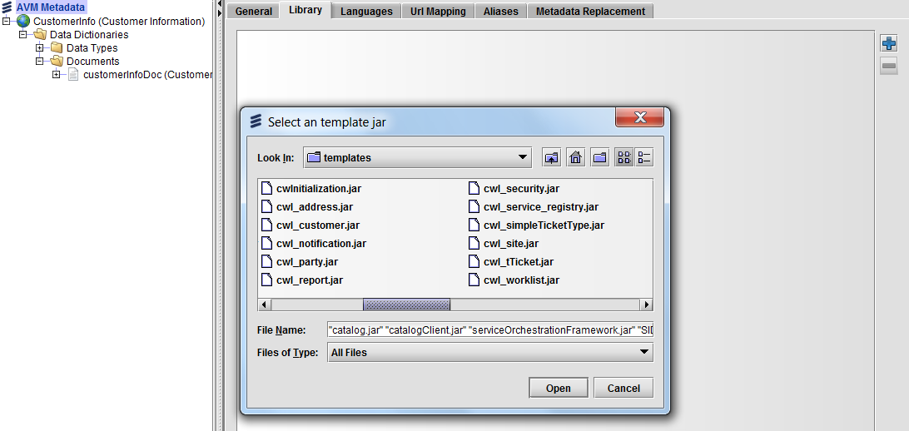
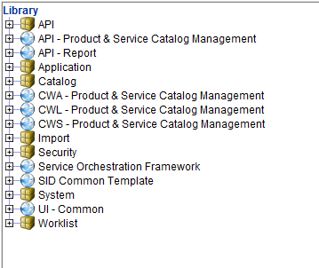

Add Library JAR Files
The catalog library files contain the metadata that enables the Catalog application to run. The library files are in .jar format and are included in the installation folder. These files must be added to Velocity Studio's library. To add these files, complete the following steps:
- Open Velocity Studio and click File > Open Project from the menu bar.
- Click the root metadata node (for example, CatalogProj), and then click the Library tab in the right pane.
- Click the Add ( ) button. The Select an template jar dialog appears.
- Add the following catalog JAR files specified in the table, which are located in the <installation_folder>\module folder:
| Required JAR Files |
Recursive JAR Files |
- ecm.jar
|
- catalog.jar
- catalogClient.jar
- cwl_pscm.jar
- cws_pscm.jar
- pscm.jar
- SIDCommon.jar
- serviceOrchestrationFramework.jar
|

- Click the Open button. A Copy File dialog appears; select Yes to copy the JAR files to your <project folder>\templates folder.
- Click the Save button. A dialog appears, prompting whether you want to reload your project.
- Click the Yes button to confirm. For the library files to take effect, you must reload your project
After you have successfully added all library files, the Library tab in the left pane of Velocity Studio contains the appropriate folders for the JAR files.

|